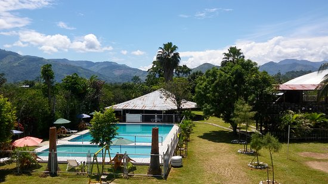

La Provincia de Satipo es una provincia situada en la parte oriental del Departamento de Junín, bajo la administración del Gobierno regional de Junín, en la parte central del Perú. Limita al norte con el Departamento de Pasco, al este con el Departamento del Ucayali y el Departamento del Cuzco, al sur con el Departamento de Ayacucho y al oeste con las provincias de Chanchamayo, Jauja, Concepción y Huancayo.
